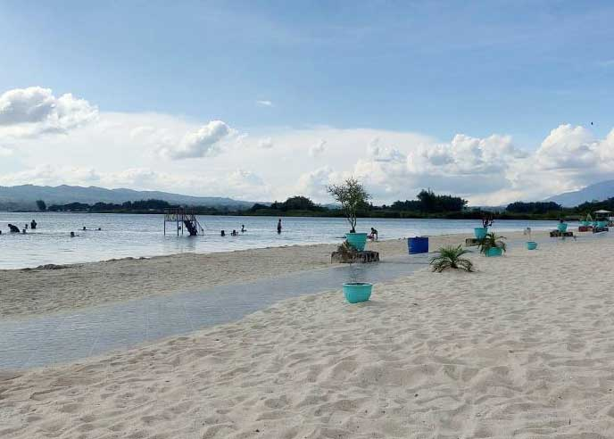

Pasir Putih

Sejauh mata memandang, bukit menjulang yang berdiri kukuh seakan menindih Danau Toba yang tenang. Desiran air danau yang berlari ke garis pantai, membentur tumpukan pasir menyambut rasa penasaran dengan lokasi wisata yang sering disebut-sebut orang jika berkunjung ke Samosir. .Lokasi wisata ini menawarkan aneka wahana permainan danau seperti, banana boat yang memuat delapan orang, jet ski, sepeda air, perahu dayung dan ban. Tarifnya sendiri bervariasi dengan durasi tertentu. Seperti banana boat dan jet ski disewa seharga Rp 200.000 untuk pemakaian setengah jam. Sepeda air disewakan seharga Rp 50.000 untuk durasi pemakaian satu jam dan pemakaian ban seharga Rp 10.000 tanpa dibatasi waktu.